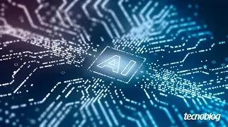

Javier Mateos Carballares
- Los Orígenes y los Pioneros (Décadas de 1940 y 1950)
La idea de que las máquinas pudieran pensar no nació con las computadoras modernas, sino en la intersección de la filosofía, la matemática y la neurociencia. Los fundamentos matemáticos (1943): El neurofisiólogo Warren McCulloch y el matemático Walter Pitts publicaron un artículo revolucionario donde demostraron que las neuronas biológicas podían modelarse mediante lógica matemática y circuitos eléctricos. Este fue el nacimiento teórico de las redes neuronales artificiales. El Test de Turing (1950): El brillante matemático británico Alan Turing publicó su célebre artículo "Computing Machinery and Intelligence", donde planteó la pregunta: «¿Pueden pensar las máquinas?». Para responderla de forma práctica, ideó el Test de Turing, un experimento donde una máquina debe imitar una conversación humana de tal forma que un juez no pueda distinguir si está chateando con una persona o con un software. El nacimiento oficial en Dartmouth (1956): El término "Inteligencia Artificial" fue acuñado oficialmente en el verano de 1956 durante un taller de verano celebrado en el Dartmouth College (Nuevo Hampshire, EE. UU.). Organizado por John McCarthy, Marvin Minsky, Nathaniel Rochester y Claude Shannon, este evento reunió a los mentes más brillantes de la época con la audaz premisa de que "cada aspecto del aprendizaje o cualquier otra característica de la inteligencia puede ser descrito con tanta precisión que una máquina puede ser construida para simularlo".
- Los Primeros Avances y el Primer «Invierno de la IA» (1960 - 1970)
Durante las dos décadas posteriores a Dartmouth, el optimismo era desbordante y la financiación gubernamental (especialmente militar a través de DARPA) fluía sin restricciones. El optimismo y los primeros programas: Se desarrollaron programas pioneros como ELIZA (1966), un chatbot creado por Joseph Weizenbaum que simulaba a un terapeuta rogeriano, y SHRDLU (1968-1970), que podía entender instrucciones en lenguaje natural para mover bloques virtuales en una pantalla. Las limitaciones de la época: Los investigadores creían que bastaba con aumentar la potencia de cálculo y escribir más reglas lógicas. Sin embargo, se tropezaron con muros insalvables: Combinatoria explosiva: Los problemas del mundo real requerían tantas variables y reglas que las computadoras colapsaban por falta de memoria y velocidad. Falta de sentido común: Los programas sabían aplicar reglas estrictas, pero carecían por completo de contexto sobre el mundo físico. El primer invierno de la IA (1974-1980): Ante las promesas incumplidas y la incapacidad de resolver problemas complejos, agencias como el gobierno estadounidense recortaron drásticamente los presupuestos de investigación, sumiendo al sector en una larga sequía de financiación y desinterés académico.
- El Resurgir: Los Sistemas Expertos y el Segundo Invierno (1980 - 1993)
En los años 80, la IA experimentó una nueva edad dorada gracias a un enfoque comercial muy específico. La era de los Sistemas Expertos: En lugar de intentar crear una inteligencia general, los científicos apostaron por replicar el conocimiento de especialistas humanos en campos muy acotados (como la medicina o la geología). Programas como XCON, utilizado por DEC para configurar pedidos de ordenadores, ahorraron millones de dólares a las empresas y demostraron una utilidad económica directa. El colapso comercial y el segundo invierno (Finales de los 80s - Principios de los 90s): Los sistemas expertos eran extremadamente costosos de mantener, difíciles de actualizar y requerían que programadores humanos codificaran miles de reglas a mano. Cuando aparecieron las computadoras personales (PC) y las estaciones de trabajo económicas, los costosos servidores dedicados a la IA quedaron obsoletos, provocando una nueva crisis e "invierno" a finales de los 80 y principios de los 90.
- El Despertar del Aprendizaje Automático y el Triunfo del Big Data (1990 - 2010)
En lugar de depender exclusivamente de reglas escritas por humanos, la investigación dio un giro radical hacia enfoques estadísticos y algorítmicos donde las máquinas aprendían a partir de datos. Hitos históricos de la potencia: En 1997, el superordenador Deep Blue de IBM derrotó al entonces campeón mundial de ajedrez, Garri Kaspárov. Aunque funcionaba con una enorme fuerza bruta de cálculo más que con IA general, supuso un golpe de efecto mediático tremendo. La llegada del Big Data y Internet: Con la expansión masiva de internet a finales de los 90 y 2000, el mundo comenzó a generar petabytes de información digital (textos, imágenes, historiales de navegación). Los algoritmos de Machine Learning (Aprendizaje Automático) encontraron por fin el combustible perfecto: datos masivos para entrenar modelos estadísticos. Watson y la televisión (2011): IBM Watson ganó el concurso televisivo Jeopardy! superando a los mejores humanos históricos, demostrando una notable capacidad de comprensión del lenguaje natural y procesamiento de información compleja.
- La Revolución del Deep Learning y la Era Moderna (2012 - Presente)
El panorama actual comenzó a gestarse con la maduración de las redes neuronales profundas (Deep Learning), impulsadas por potentes tarjetas gráficas (GPUs) capaces de procesar miles de cálculos simultáneos. El punto de inflexión de ImageNet (2012): Un equipo liderado por Geoffrey Hinton ganó el concurso de reconocimiento visual ImageNet utilizando una red neuronal profunda. Redujo drásticamente la tasa de error frente a los métodos tradicionales, marcando el pistoletazo de salida de la fiebre actual por la IA. La conquista de juegos complejos (2016): AlphaGo, desarrollado por DeepMind (Google), derrotó al campeón mundial de Go, Lee Sedol. El juego de mesa Go tiene más combinaciones posibles que átomos hay en el universo visible, por lo que la victoria demostró que la IA podía dominar la intuición estratégica y el aprendizaje por refuerzo. La explosión de los Modelos de Lenguaje y la Generación Multimodal (2020 - Actualidad): La aparición de arquitecturas avanzadas como los Transformers (introducidos por Google en 2017) permitió el nacimiento de grandes modelos de lenguaje (LLMs) y sistemas generativos capaces de redactar textos, componer música, programar software y generar imágenes hiperrealistas a partir de descripciones sencillas (prompts).
